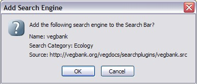
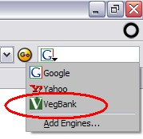

This is only for Firefox and Mozilla browsers.
INSTALL BY CLICKING HERE.
You will then be asked to confirm that you want to install the Sidebar Search Engine in a dialog box that looks like this:
.
Choose "OK" to install the sidebar.
To search vegbank, choose the VegBank search engine where the Google search generally appears.

Enter search terms in the box (for example: acer) and press Enter on your keyboard. You'll be taken to the VegBank website with the results of your query.
If you'd prefer to install our search engine manually, see Instructions here and download these files: vegbank.src | vegbank.png and put them in the directory mentioned in the instructions, restart mozilla, and it should be installed.@vegbank_footer_html_tworow@